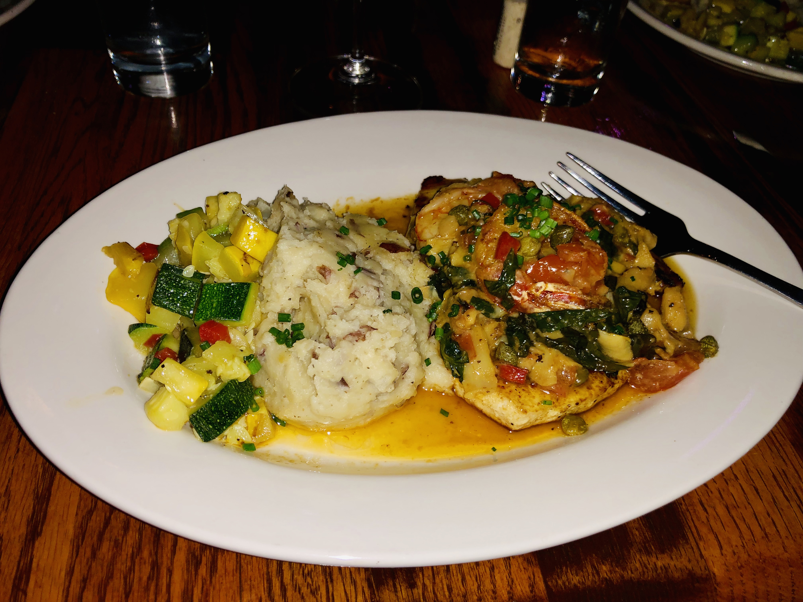
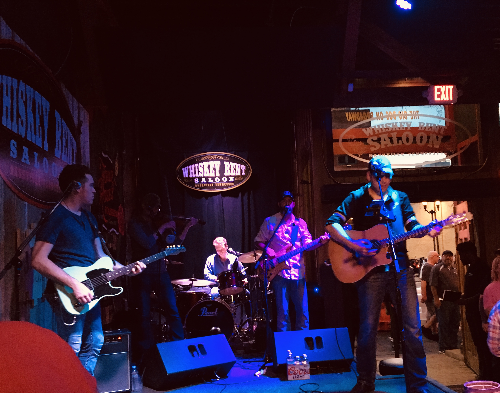

Coffee Shops
Relaxing mornings and good coffee are a must on vacation! What better way to do that than the great atmosphere and flavors of local coffee shops!
We visited three shops during our weekend - all different and amazing!
- Pinewood Social
- Barista Parlor
- Crema Coffee
We visited Pinewood for breakfast on Saturday morning. Very busy place, you may want reservations, but we found a seat at the bar. The Cuban coffee was recommended, and didn't disappoint. We ate brunch here too and food was equally delicious! There is also a bowling alley in the back for more entertainment, but make sure to book a time early if you want to play.

A quick stop for an afternoon pick-me-up on Sunday... very cute place with great patio. Located in Gulch neighborhood, great place to rest between shopping!

A great quick stop on Monday morning for coffee and breakfast before we hit the road home!
Restaurants
Another important aspect to enjoy while away is good food! We hit a wide variety of restaurants, from upscale sit-down to eating on-the-go. Here are a couple I would highlight:
- Skulls Rainbow Room
- Burger Up
- Mellow Mushroom
We decided to do an upscale dinner on Friday night... reservations are required! Amazing food and drink menu with live jazz music! I ordered the special of the night - Swordfish. It was fabulous!
Very trendy and delicious burger joint. Great atmosphere and food - a burger for all diet types. I enjoyed the Turkey burger and sweet potato fries. And don't pass up thier homeade ketchup!
And who can go a weekend without pizza? I love Mellow Mushroom pizza and they have a location right on Broadway. Great way to take a break from the bar-scene, but they also have live music if you want to enjoy while you eat!
Breweries
It's always good to check out local attractions, micro-breweries included! We visited two, but there are now more than 20 operating throughout middle TN, according to Thrillist.com
- Yazoo Brewing Company
- Jackalope Brewing Company
A well known Nashville beer that's been around since 2003. Located in the Gulch neighborhood, stop in for a flight to try a few from their great selection!

Great beer, great atmosphere and fun beer names. Definitely stop in for a drink!

Music
Nashville's Honky Tonk Highway, located on Lower Broadway, is a row of 'honky tonks' pumping live music into the streets from 10am to 3am EVERYDAY. One of the best parts: it doesn't cost a thing (no cover charge)!
The music alone is a great reason to visit Nashville. The talent is on another level, and you never know if you are listening to the next BIG star! Hop from bar to bar and get a variety of music from country to rock, 80s to now! Below are just a couple of our favorite spots, but there are so many more that you have to check out!
- Whiskey Bent Saloon
- Luke's 32 Bridge
- Tootsies Orchid Lounge
One of my favorite stops! Great country music in small rustic space that makes it feel like the band is singing to you.
Luke Bryan's new bar on Broadway has 6 levels, 8 bars, and 4 stages for live music. I loved the rooftop bar - great place to enjoy the beautiful weather and view of Nashville.
The world famous Tootsies is a must-stop! Always great music with 3 levels and 4 stages, along with lots of history. And just to show you never know who you will see in Nashville - just hours after being at Tootsies, on the same level where we were sitting, Pink surprised fans with an appearance and sang! Still can't believe I missed it!!